Unknown
过去的十年，如果不说别的，也是科学技术领域一次惊心动魄的冒险。第一代 iPhone 于 2007 年发布，当时它的所有竞争对手都有一个物理集成键盘。触摸屏的想法并不新鲜，因为苹果之前就有类似的原型，IBM 在 1994 年就推出了 Simon Personal Communicator。苹果的想法是拥有一个充满多媒体娱乐的设备，如听音乐和流媒体视频，同时拥有所有有用的功能，如网络和 GPS 导航。当然，在苹果发布第一代 iPhone 时，所有这一切都有可能获得负担得起的计算能力。如果你真的想一想这些伟大的公司在过去 20 年里的奋斗历程，你就会明白科技发展到今天的速度有多快。从长远来看，在第一代 iPhone 发布 10 年后，今天你的 iPhone 和其他手机一样，可以跟踪人脸并识别动物、车辆和食物等物体。它能听懂自然语言，和你对话。
可以打印器官的 3D 打印机、自动驾驶汽车、成群结队和谐飞行的无人机、基因编辑、可重复使用的火箭以及可以做后空翻的机器人呢？这些不再是你在科幻小说中读到的故事了，当你读这几行的时候，它们正在发生。这在过去你只能想象，但今天，科幻小说正在成为现实。人们已经开始谈论人工智能 ( AI )的威胁。许多领先的科学家，如斯蒂芬·霍金，正在警告官员们人类可能的末日，这可能是由基于人工智能的生命形式造成的。
AI 和机器学习 ( ML )在过去几年达到了顶峰，完全抢尽了风头。很有可能你已经听说了最大似然算法的成功和过去十年中该领域的巨大进步。谷歌 AlphaGo 最近的成功表明，当它击败地球上最优秀的人类围棋选手柯洁时，这项技术可以走多远。这不是 ML 算法第一次在图像识别等特定任务中击败人类。当涉及到细粒度的细节时，例如识别不同种类的动物，这些算法往往比它们的人类竞争对手表现得更好。
这些进步引起了商界的极大兴趣。虽然这听起来像是一个学术研究领域，但是这些技术具有巨大的商业意义，并且可以直接影响您组织的财务状况。
来自不同行业的企业希望利用这些算法的能力，并尝试适应不断变化的技术场景。每个人都意识到，知道如何将这些技术整合到他们的业务中的人将引领这个领域，其余的人将很难赶上。
我们将在书中探讨更多这样的例子。在本书中，我们将涉及以下主题:
- 机器学习的范围
- 什么是 AutoML
- 为什么要使用 AutoML 以及它有什么帮助
- 何时使用 AutoML
- AutoML 库概述
Unknown
机器学习和预测分析现在可以帮助公司专注于重要领域，在问题发生前预测问题，降低成本，增加收入。这是使用商业智能 ( BI )解决方案后的自然发展。BI 应用程序通过以一种有组织的方式监控他们的业务流程来帮助公司做出更好的决策，通常使用具有各种关键绩效指标(KPI)和绩效指标的仪表板。
BI 工具允许您更深入地挖掘组织的历史数据，揭示趋势，了解季节性，找出不规则事件，等等。它们还可以提供实时分析，您可以设置一些警告和警报来更好地管理特定事件。所有这些都非常有用，但是今天企业需要的不仅仅是这些。那是什么意思？BI 工具允许您处理历史数据和接近实时的数据，但它们不能为您提供未来的答案，也不能回答以下问题:
- 您生产线上的哪台机器可能会出现故障？
- 你的哪些客户可能会转向你的竞争对手？
- 哪家公司的股票价格明天会上涨？
如今，企业希望回答这类问题，这促使他们寻找合适的工具和技术，这将他们带到了 ML 和预测分析。
但是你需要小心！当你用 BI 工具工作时，你对你将要得到的结果更有信心，但是当你用 ML 模型工作时，就没有这样的保证了，而且地面很滑。如今，关于人工智能和人工智能肯定有一个巨大的嗡嗡声，人们对即将到来的人工智能产品的能力提出了令人愤慨的说法。毕竟，计算机科学家长期以来一直在寻求创造智能机器，偶尔也会因为不切实际的期望而遭受损失。你可以在谷歌上快速搜索一下关于艾冬的信息，了解更多关于那个时期的信息。尽管进步超出了想象，并且该领域发展迅速，但是您应该在噪音中导航，看看 ML 真正闪耀的实际用例是什么，它们可以帮助您以可测量的方式为您的研究或业务创造价值。
为此，您需要从小型试点项目开始，其中:
- 你有一个相对容易的决策过程
- 你很清楚自己的假设
- 你很了解你的数据
这里的关键是要有一个明确的项目范围和你要执行的步骤。在这个过程中，不同团队之间的合作非常有帮助，这就是为什么你应该打破组织内部的孤岛。还有，从小处着手不代表你的眼界也要小。您应该始终考虑未来的可伸缩性，并慢慢准备好利用大数据源。
有多种多样的 ML 算法可供您尝试，每种算法都是为解决特定问题而设计的，各有利弊。这一领域的研究越来越多，从业者每天都在想出新的方法，挑战这一领域的极限。因此，人们可能很容易迷失在所有可用的信息中，尤其是在开发 ML 应用程序时，因为模型构建过程的每个阶段都有许多可用的工具和技术。为了简化 ML 模型的构建，您需要将整个过程分解成小部分。自动化 ML ( AutoML )流水线有很多活动部分，如特征预处理、特征选择、模型选择、超参数优化等。这些部分中的每一个都需要特别小心地处理，以交付成功的项目。
你会在整本书中听到很多关于 ML 的概念，但是让我们退一步理解为什么你需要特别关注 AutoML。
随着您的武库中有更多的工具和技术来解决您的问题，拥有太多的选项通常会成为一个问题本身，并且需要相当多的时间来研究和理解针对给定问题的正确方法。当你在处理 ML 问题时，情况也差不多。构建高性能的 ML 模型包含几个精心制作的小步骤。每一步都会引导您进入下一步，如果您在前进的道路上没有掉以轻心，那么当您在生产环境中部署您的管道时，您的 ML 管道将会正常工作并很好地推广。
管道中涉及的步骤可能会很多，过程可能会非常漫长。在每一步，都有许多可用的方法，并且，一旦您想到不同组合的可能数量，您将很快意识到您需要一种系统的方法来试验您的 ML 管道中的所有这些组件。
这就把我们带到了 AutoML 的话题上！
Unknown
AutoML 旨在通过自动化常用步骤(如特征预处理、模型选择和超参数调整)来简化构建 ML 模型的过程。在接下来的章节中，你将会看到每一个步骤的细节，并且你将会实际构建一个 AutoML 系统来更深入地理解 AutoML 的可用工具和库。
在不深入细节的情况下，回顾一下什么是 ML 模型以及如何训练 ML 模型是很有用的。
ML 算法会对你的数据进行处理，找出某些模式，这个学习过程叫做模型训练。作为模型训练的结果，你将有一个 ML 模型，它应该给你关于数据的见解/答案，而不需要你写明确的规则。
当你在实践中使用 ML 模型时，你会抛出一堆数值数据作为训练算法的输入。训练过程的输出是一个 ML 模型，您可以用它来进行预测。预测可以帮助您根据服务器的当前状态决定是否应该在接下来的四个小时内对其进行维护，或者您的客户是否会转向您的竞争对手。
有时候，你正在解决的问题并不是很明确，你甚至不知道你在寻找什么样的答案。在这种情况下，ML 模型将帮助您探索您的数据集，例如识别一群在行为方面彼此相似的客户，或者根据他们的相关性找到股票的层次结构。
当你的模型出现客户群时，你会怎么做？嗯，你至少知道这一点:属于同一个集群的客户在他们的特征方面彼此相似，例如他们的年龄、职业、婚姻状况、性别、产品偏好、每日/每周/每月的消费习惯、消费总额等等。属于不同集群的客户互不相同。有了这样的认识，你可以利用这些信息为每个集群创建不同的广告活动。
为了从更技术性的角度来看问题，让我们用简单的数学术语来理解这个过程。有一个数据集 X ，包含 n 个例子。这些例子可以代表顾客或不同种类的动物。每个例子通常是一组实数，称为特征，例如，如果我们有一位 35 岁的女性顾客在你的商店消费了 12000 美元，你可以用下面的向量(0.0，35.0，12000.0)来表示这位顾客。请注意，性别用 0.0 表示，这意味着男性客户将拥有该特征的 1.0 。向量的大小代表维度。因为这是一个大小为三的向量，我们通常用 m 来表示，所以这是一个三维数据集。
根据问题的类型，您可能需要为每个示例指定一个标签。例如，如果这是一个监督学习问题，如二进制分类，您可以将您的示例标记为 1.0 或 0.0，这个新变量称为标签或目标变量。目标变量通常被称为 y 。
有了 x 和 y ，ML 模型就是一个函数， f ，带权重， w (模型参数):
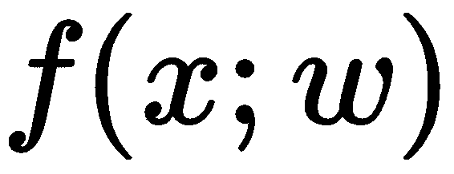
模型参数是在训练过程中学习的，但是在训练开始之前，您可能还需要设置其他参数，这些参数被称为超参数，稍后将对其进行解释。
数据集中的要素通常应在用于模型训练之前进行预处理。例如，一些 ML 模型隐含地假设特征是正态分布的。在许多实际场景中，情况并非如此，您可以通过应用功能转换(如对数转换)来使它们呈正态分布。
一旦完成特征处理并设置了模型超参数，就开始模型训练。在模型训练结束时，将学习模型参数，并且我们可以预测模型之前未见过的新数据的目标变量。模型做出的预测通常称为 :
:
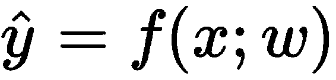
训练中到底发生了什么？因为我们知道用于训练的数据集的标签，所以我们可以基于我们当前模型预测的和原始标签的比较来迭代地更新我们的模型参数。
这种比较基于一个叫做损失函数(或成本函数)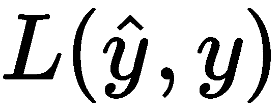的函数。损失函数代表预测的不准确性。你可能听说过一些常见的损失函数，如平方损失、铰链损失、逻辑损失和交叉熵损失。
一旦模型训练完成，您将在test数据上测试您的 ML 模型的性能，该数据是尚未在训练过程中使用的数据集，以查看您的模型概括得如何。您可以使用不同的性能指标来评估性能；根据结果，您应该返回到前面的步骤，进行多次调整以获得更好的性能。
在这一点上，你应该有一个 ML 模型在引擎盖下是什么样的培训的总体想法。
那么什么是 AutoML 呢？当我们谈论 AutoML 时，我们大多指的是自动化数据准备(即特征预处理、生成和选择)和模型训练(模型选择和超参数优化)。根据问题类型的不同，此过程中每个步骤的可能选项的数量可能会有很大差异。
AutoML 允许研究人员和实践者从这些可能的选项中为每一步自动构建 ML 管道，从而为给定的问题找到高性能的 ML 模型。
下图显示了典型的 ML 模型生命周期，每个步骤都有几个示例:
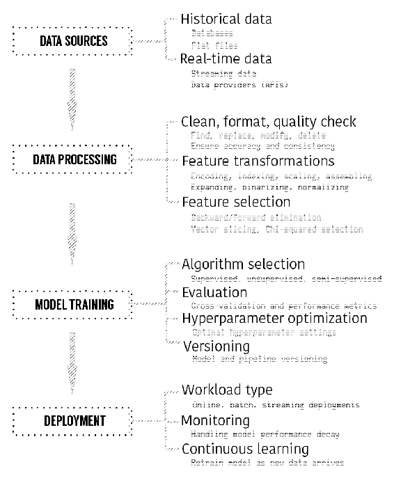
数据可以从各种来源获取，比如平面文件、数据库和 API。一旦您能够接收数据，您应该对其进行处理，使其为 ML 做好准备，并且有典型的操作，例如清理和格式化、要素转换和要素选择。数据处理后，您的最终数据集应该为 ML 做好准备，您将列出候选算法。入围的算法应通过交叉验证和超参数优化等技术进行验证和调整。您的最终模型将准备就绪，可用于适当的工作负载类型，如在线、批处理和流部署。一旦模型投入生产，您需要监控它的性能，并在需要时采取必要的措施，如重新培训、重新评估和重新部署。
一旦你面临建立 ML 模型，你首先要对你正在工作的领域进行研究，并确定你的目标。在实际开始工作之前，应该提前计划和记录这个过程中涉及的许多步骤。要了解更多关于项目管理的整个过程，你可以参考 CRISP-DM 模型(https://en . Wikipedia . org/wiki/Cross-industry _ standard _ process _ for _ data _ mining)，项目管理对于交付一个成功的应用至关重要，然而，这已经超出了本书的范围。
就构建 ML 管道而言，您通常会有多个数据源，比如关系数据库或平面文件，您可以在其中获得历史数据。您还可以让数据流从各种资源流入您的系统。
您将对这些数据源进行处理，以了解哪些数据源可能对您的特定任务有用，然后您将进入数据处理步骤，在此步骤中，您将进行大量清理、格式化和数据质量检查，然后进行要素转换和选择。
当您决定您的数据集可以输入 ML 模型时，您将需要考虑使用一个或多个合适的 ML 模型。您将训练多个模型，评估它们，并搜索最佳超参数设置。此时版本控制将帮助您跟踪变更。作为实验的结果，您将拥有一个性能 ML 管道，其中每一步都针对性能进行了优化。表现最好的 ML 管道将是您希望在生产环境中测试的管道，这也是您希望在部署步骤中实施它的地方。
操作 ML 管道意味着您需要选择部署类型。一些工作负载将用于批量处理数据库中的数据，在这种情况下，您需要批量部署。其他可能是用于处理由各种数据提供者提供的实时数据，在这种情况下，您将需要流部署。
如果你仔细检查每一个步骤，特别是数据处理和训练步骤中的选项是巨大的。首先，您需要选择适当的方法和算法，然后您还应该微调所选方法和算法的超参数，使它们能够最好地解决您给定的问题。
举一个简单的例子，假设您已经完成了模型训练步骤，您需要选择一组 ML 模型进行实验。为了使事情变得更简单，让我们说你想要试验的唯一算法是 k-means，它只是关于调整它的参数。
http://scikit-learn.org/stable/install.html), don't worry if you don't understand every line:
# Sklearn has convenient modules to create sample data.
# make_blobs will help us to create a sample data set suitable for clustering
from sklearn.datasets.samples_generator import make_blobs
X, y = make_blobs(n_samples=100, centers=2, cluster_std=0.30, random_state=0)
# Let's visualize what we have first
import matplotlib.pyplot as plt
import seaborn as sns
plt.scatter(X[:, 0], X[:, 1], s=50)
上述代码片段的输出如下:
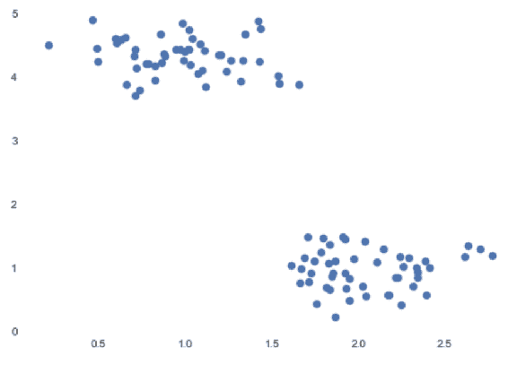
你可以很容易地看到我们在图上有两个集群:
# We will import KMeans model from clustering model family of Sklearn
from sklearn.cluster import KMeans
k_means = KMeans(n_clusters=2)
k_means.fit(X)
predictions = k_means.predict(X)
# Let's plot the predictions
plt.scatter(X[:, 0], X[:, 1], c=predictions, cmap='brg')
上述代码片段的输出如下:
不错！我们的算法如我们预期的那样工作。敏锐的读者可能已经注意到，k 均值模型有一个名为n_clusters的论点。当您将此值提供给 k-means 算法时，它会尝试将此数据集分成两个聚类。你可以猜到，k-means 在这种情况下的超参数是聚类数。k-means 模型在训练之前需要知道这个参数。
不同的算法有不同的超参数，如决策树的树深度、隐藏层数、神经网络的学习率、Lasso 或 C 的 alpha 参数、支持向量机 ( SVMs )的 kernel 和 gamma。
让我们通过使用get_params方法来看看 k-means 模型有多少个参数:
k_means.get_params()
输出将是您可以优化的所有参数的列表:
{'algorithm': 'auto',
'copy_x': True,
'init': 'k-means++',
'max_iter': 300,
'n_clusters': 2,
'n_init': 10,
'n_jobs': 1,
'precompute_distances': 'auto',
'random_state': None,
'tol': 0.0001,
'verbose': 0}
在大多数真实的用例中，您既没有资源也没有时间来尝试所有步骤选项的每种可能的组合。
在这一点上，AutoML 库通过为各种 ML 管道仔细设置实验来帮助您，这些实验涵盖了从数据摄取、数据处理、建模和评分的所有步骤。
Unknown
互联网上有许多 ML 教程，通常样本数据集是干净的、格式化的，并准备好用于算法，因为许多教程的目的是展示某些工具、库或软件即服务 ( SaaS )产品的能力。
实际上，数据集有不同的类型和大小。Kaggle 在 2017 年进行的一项名为数据科学和机器学习的状态的行业调查显示，超过 16，000 份回复显示，前三种常用的数据类型是关系数据、文本数据和图像数据。
此外，根据 Kaggle 的调查，杂乱的数据是人们必须处理的问题中的首要问题。当一个数据集很乱，需要很多特殊处理才能被 ML 模型使用时，你要花大量的时间在数据清理、操作和手工制作特征上，以使其形状正确。这是任何数据科学项目中最耗时的部分。
如何选择高性能的 ML 模型，在训练、验证和测试阶段优化模型的超参数？这些也是非常重要的步骤，可以通过多种方式执行。
当正确的组件组合在一起对数据集进行处理和建模时，该组合就代表了一个 ML 管道，并且要实验的管道数量可能会非常快地增长。
为了成功构建高性能的 ML 管道，您应该通过考虑您在时间和硬件/软件资源方面的限制，系统地检查每个步骤的所有可用选项。
AutoML 系统帮助您定义健壮的方法，为给定的问题自动构建 ML 管道，并有效地执行它们，以便找到性能模型。
Unknown
一旦您对构建 ML 管道有了信心，您将会意识到您必须执行许多普通的例程来准备特性和调整超参数。您还会对某些方法更有信心，并且您会对哪些技术可以与不同的参数设置一起很好地工作有一个很好的想法。
在不同的项目之间，您通过执行多个实验来评估您的处理和建模管道，以迭代的方式优化整个工作流，从而获得更多的经验。如果你从一开始就没有组织好，管理整个过程会很快变得非常糟糕。
当你处理许多运动部件和大量参数时，AutoML 的必要性就从这些困难的情况中产生了。在这些情况下，AutoML 可以帮助您以结构化的方式关注设计和实现细节。
Unknown
通过这本书，你将学习 AutoML 系统的理论和实践。更重要的是，你将通过从头开始开发一个 AutoML 系统来练习你的技能。
Unknown
在本节中，您将了解 AutoML 系统的以下核心组件:
更好地理解核心组件将有助于您创建 AutoML 系统的思维地图。
Unknown
当您处理 ML 问题时，您通常有一个包含各种类型数据的关系数据集，并且您应该在训练 ML 算法之前正确地处理它们。
例如，如果您正在处理数字数据，您可以通过应用最小-最大缩放或方差缩放等方法来缩放它。
对于文本数据，您可能希望删除停用词，如 a 、a和a，并执行词干、解析和标记化等操作。
对于分类数据，您可能需要使用一次性编码、虚拟编码和特征散列等方法对其进行编码。
拥有非常多的功能怎么样？例如，当你有成千上万的特性时，其中有多少是真正有用的？用主成分分析 ( PCA )等方法降维会不会更好？
如果您有不同格式的数据，如视频、音频和图像，该怎么办？你如何处理每一个问题？
例如，对于图像数据，您可以应用一些变换，如将图像重新缩放为常见的形状，以及分割某些区域。
有大量的特征预处理方法，ML 算法在一些变换下会表现得更好。在你的武器库中拥有一个灵活的 AutoML 系统将允许你以一种聪明的方式试验不同的组合，这将为你的项目节省大量的时间和金钱。
Unknown
一旦你完成了特征处理，你需要找到一套合适的算法用于训练和评估。
每个最大似然算法都有解决某些问题的能力。让我们考虑聚类算法，如 k-means、层次聚类、谱聚类和 DBSCAN。我们熟悉 k-means，但是其他的呢？这些算法都有各自的应用领域，而且根据数据集的分布特性，每种算法的性能都可能优于其他算法。
AutoML 管道可以帮助您针对给定的问题从一组合适的算法中选择正确的算法。
Unknown
每个最大似然算法都有一个或多个超参数，而你已经熟悉了 k-means。但是，不仅仅是 ML 算法有超参数，特征处理方法也有它们的超参数，它们也需要微调。
调整超参数对于模型的成功至关重要，AutoML pipeline 将帮助您定义一系列您想要试验的超参数，从而获得最佳性能的 ML pipeline。
Unknown
在整本书中，你将从头开始构建 AutoML 系统的每个核心组件，并看到每个部分如何相互作用。
拥有从头构建这种系统的技能会让你更深入地理解这个过程以及流行的 AutoML 库的内部工作原理。
Unknown
一旦你读完了所有的章节，你将会很好的理解这些组件，以及它们如何一起工作来创建 ML 管道。然后，您将使用您的知识从头开始编写 AutoML 管道，并以任何方式调整它们，以解决您想要解决的一系列问题。
Unknown
有许多流行的 AutoML 库，在本节中，您将对数据科学社区中常用的库有一个概述。
Unknown
feature tools(https://www.featuretools.com/)是一个很好的库，用于从关系和事务数据中自动设计特性。该库引入了名为深度特征合成 ( DFS )的概念。如果您有多个数据集，其中定义了关系，例如基于用作唯一标识符的列的父子关系，则 DFS 将基于某些计算(如求和、计数、平均值、模式、标准偏差等)创建新功能。让我们看一个小例子，其中有两个表，一个显示数据库信息，另一个显示每个数据库的数据库事务:
import pandas as pd
# First dataset contains the basic information for databases.
databases_df = pd.DataFrame({"database_id": [2234, 1765, 8796, 2237, 3398],
"creation_date": ["2018-02-01", "2017-03-02", "2017-05-03", "2013-05-12", "2012-05-09"]})
databases_df.head()
您将获得以下输出:
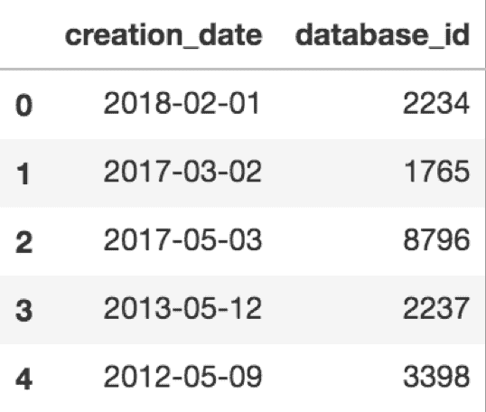
以下是数据库事务的代码:
# Second dataset contains the information of transaction for each database id
db_transactions_df = pd.DataFrame({"transaction_id": [26482746, 19384752, 48571125, 78546789, 19998765, 26482646, 12484752, 42471125, 75346789, 16498765, 65487547, 23453847, 56756771, 45645667, 23423498, 12335268, 76435357, 34534711, 45656746, 12312987],
"database_id": [2234, 1765, 2234, 2237, 1765, 8796, 2237, 8796, 3398, 2237, 3398, 2237, 2234, 8796, 1765, 2234, 2237, 1765, 8796, 2237],
"transaction_size": [10, 20, 30, 50, 100, 40, 60, 60, 10, 20, 60, 50, 40, 40, 30, 90, 130, 40, 50, 30],
"transaction_date": ["2018-02-02", "2018-03-02", "2018-03-02", "2018-04-02", "2018-04-02", "2018-05-02", "2018-06-02", "2018-06-02", "2018-07-02", "2018-07-02", "2018-01-03", "2018-02-03", "2018-03-03", "2018-04-03", "2018-04-03", "2018-07-03", "2018-07-03", "2018-07-03", "2018-08-03", "2018-08-03"]})
db_transactions_df.head()
您将获得以下输出:
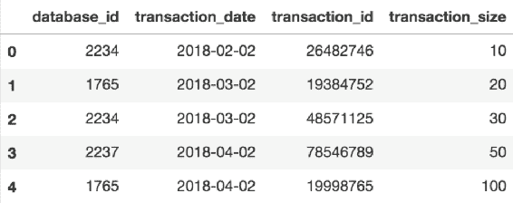
实体的代码如下:
# Entities for each of datasets should be defined
entities = {
"databases" : (databases_df, "database_id"),
"transactions" : (db_transactions_df, "transaction_id")
}
# Relationships between tables should also be defined as below
relationships = [("databases", "database_id", "transactions", "database_id")]
print(entities)
您将获得上述代码的以下输出:
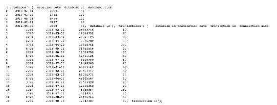
以下代码片段将创建功能矩阵和功能定义:
# There are 2 entities called ‘databases’ and ‘transactions’
# All the pieces that are necessary to engineer features are in place, you can create your feature matrix as below
import featuretools as ft
feature_matrix_db_transactions, feature_defs = ft.dfs(entities=entities,
relationships=relationships,
target_entity="databases")
以下输出显示了生成的一些功能:
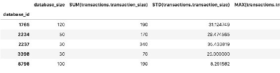
使用数据库和事务实体生成的特征
通过查看下面的features_defs，您可以看到所有的特性定义:
feature_defs
输出如下所示:
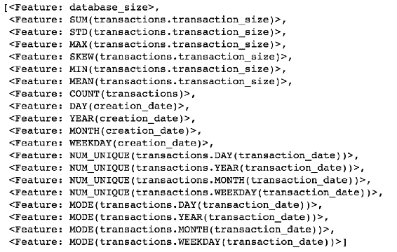
通过这种方式，您可以轻松地基于关系数据集和事务数据集生成要素。
Unknown
Scikit-learn 有一个很棒的用于开发 ML 模型和管道的 API。Scikit-learn 的 API 非常一致和成熟；如果你习惯使用它，uto-sk learn(【http://automl.github.io/auto-sklearn/stable/】)将同样容易使用，因为它确实是 scikit-learn 估值器的替代产品。
让我们看一个小例子:
# Necessary imports
import autosklearn.classification
import sklearn.model_selection
import sklearn.datasets
import sklearn.metrics
from sklearn.model_selection import train_test_split
# Digits dataset is one of the most popular datasets in machine learning community.
# Every example in this datasets represents a 8x8 image of a digit.
X, y = sklearn.datasets.load_digits(return_X_y=True)
# Let's see the first image. Image is reshaped to 8x8, otherwise it's a vector of size 64.
X[0].reshape(8,8)
输出如下所示:
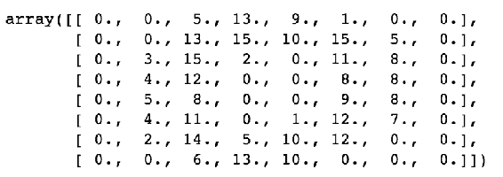
您可以绘制几幅图像来查看它们的外观:
import matplotlib.pyplot as plt
number_of_images = 10
images_and_labels = list(zip(X, y))
for i, (image, label) in enumerate(images_and_labels[:number_of_images]):
plt.subplot(2, number_of_images, i + 1)
plt.axis('off')
plt.imshow(image.reshape(8,8), cmap=plt.cm.gray_r, interpolation='nearest')
plt.title('%i' % label)
plt.show()
运行前面的代码片段将会得到下面的图:
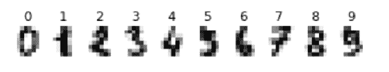
将数据集拆分为训练和测试数据:
# We split our dataset to train and test data
X_train, X_test, y_train, y_test = train_test_split(X, y, random_state=1)
# Similarly to creating an estimator in Scikit-learn, we create AutoSklearnClassifier
automl = autosklearn.classification.AutoSklearnClassifier()
# All you need to do is to invoke fit method to start experiment with different feature engineering methods and machine learning models
automl.fit(X_train, y_train)
# Generating predictions is same as Scikit-learn, you need to invoke predict method.
y_hat = automl.predict(X_test)
print("Accuracy score", sklearn.metrics.accuracy_score(y_test, y_hat))
# Accuracy score 0.98
那很容易，不是吗？
Unknown
ml box(http://mlbox.readthedocs.io/en/latest/)是另一个 AutoML 库，它支持分布式数据处理、清理、格式化和最先进的算法，如 LightGBM 和 XGBoost。它还支持模型堆叠，这允许您组合模型的信息集合来生成新的模型，旨在比单个模型具有更好的性能。
下面是它的用法示例:
# Necessary Imports
from mlbox.preprocessing import *
from mlbox.optimisation import *
from mlbox.prediction import *
import wget
file_link = 'https://apsportal.ibm.com/exchange-api/v1/entries/8044492073eb964f46597b4be06ff5ea/data?accessKey=9561295fa407698694b1e254d0099600'
file_name = wget.download(file_link)
print(file_name)
# GoSales_Tx_NaiveBayes.csv
GoSales数据集包含客户及其产品偏好的信息:
import pandas as pd
df = pd.read_csv('GoSales_Tx_NaiveBayes.csv')
df.head()
您可以从前面的代码中获得以下输出:
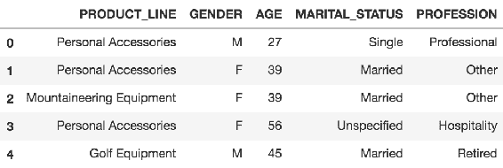
让我们通过删除一个target列，从同一个数据集创建一个test集合:
test_df = df.drop(['PRODUCT_LINE'], axis = 1)
# First 300 records saved as test dataset
test_df[:300].to_csv('test_data.csv')
paths = ["GoSales_Tx_NaiveBayes.csv", "test_data.csv"]
target_name = "PRODUCT_LINE"
rd = Reader(sep = ',')
df = rd.train_test_split(paths, target_name)
输出将类似于以下内容:
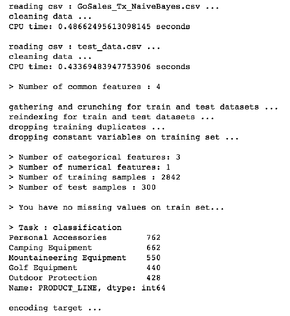
Drift_thresholder将帮助您删除train和test数据集之间的 id 和漂移变量:
dft = Drift_thresholder()
df = dft.fit_transform(df)
您将获得以下输出:
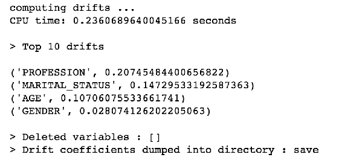
Optimiser将优化超参数:
opt = Optimiser(scoring = 'accuracy', n_folds = 3)
opt.evaluate(None, df)
通过运行上述代码，您将获得以下输出:
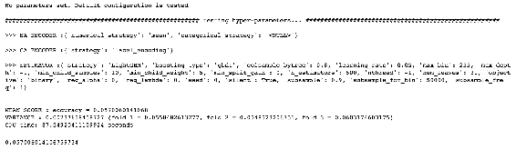
以下代码定义了 ML 管道的参数:
space = {
'ne__numerical_strategy':{"search":"choice", "space":[0]},
'ce__strategy':{"search":"choice",
"space":["label_encoding","random_projection", "entity_embedding"]},
'fs__threshold':{"search":"uniform", "space":[0.01,0.3]},
'est__max_depth':{"search":"choice", "space":[3,4,5,6,7]}
}
best = opt.optimise(space, df,15)
下面的输出向您展示了通过给定 ML 算法(在这个输出中是 LightGBM)进行测试的所选方法:
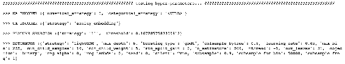
您还可以看到各种度量，如准确性、方差和 CPU 时间:
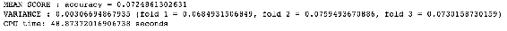
使用Predictor，您可以使用最佳模型进行预测:
predictor = Predictor()
predictor.fit_predict(best, df)
您将获得以下输出:
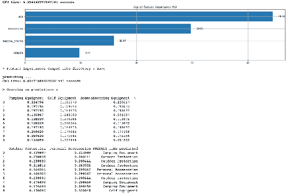
Unknown
基于树的流水线优化工具 ( TPOT )正在使用遗传编程寻找性能最佳的 ML 流水线，它是建立在 scikit-learn 之上的。
一旦您的数据集被清理并准备好使用，TPOT 将帮助您完成 ML 管道的以下步骤:
一旦 TPOT 完成实验，它将为你提供最好的管道。
TPOT 非常用户友好，因为它类似于使用 scikit-learn 的 API:
from tpot import TPOTClassifier
from sklearn.datasets import load_digits
from sklearn.model_selection import train_test_split
# Digits dataset that you have used in Auto-sklearn example
digits = load_digits()
X_train, X_test, y_train, y_test = train_test_split(digits.data, digits.target,
train_size=0.75, test_size=0.25)
# You will create your TPOT classifier with commonly used arguments
tpot = TPOTClassifier(generations=10, population_size=30, verbosity=2)
# When you invoke fit method, TPOT will create generations of populations, seeking best set of parameters. Arguments you have used to create TPOTClassifier such as generations and population_size will affect the search space and resulting pipeline.
tpot.fit(X_train, y_train)
print(tpot.score(X_test, y_test))
# 0.9834
tpot.export('my_pipeline.py')
在 Python my_pipeline.py文件中导出管道后，您将看到所选的管道组件:
import numpy as np
import pandas as pd
from sklearn.model_selection import train_test_split
from sklearn.neighbors import KNeighborsClassifier
# NOTE: Make sure that the class is labeled 'target' in the data file
tpot_data = pd.read_csv('PATH/TO/DATA/FILE', sep='COLUMN_SEPARATOR', dtype=np.float64)
features = tpot_data.drop('target', axis=1).values
training_features, testing_features, training_target, testing_target =\
train_test_split(features, tpot_data['target'].values, random_state=42)
exported_pipeline = KNeighborsClassifier(n_neighbors=6,
weights="distance")
exported_pipeline.fit(training_features, training_target)
results = exported_pipeline.predict(testing_features)
就是这个！
Unknown
到目前为止，您应该对什么是自动化 ML 以及为什么您需要熟悉 ML 管道有了一个总体的概念。
您已经回顾了 AutoML 系统的核心组件，并且使用流行的 AutoML 库练习了您的技能。
这肯定不是全部，AutoML 是一个活跃的研究领域。您应该看看其他库，如 Auto-WEKA，它也使用贝叶斯优化的最新创新，以及 Xcessive，它是一个用户友好的工具，用于创建堆叠的集合。
现在，这已经足够神奇了！你应该开始创作你自己的杰作，在接下来的章节中，你将会建立一个你自己的 AutoML 系统！